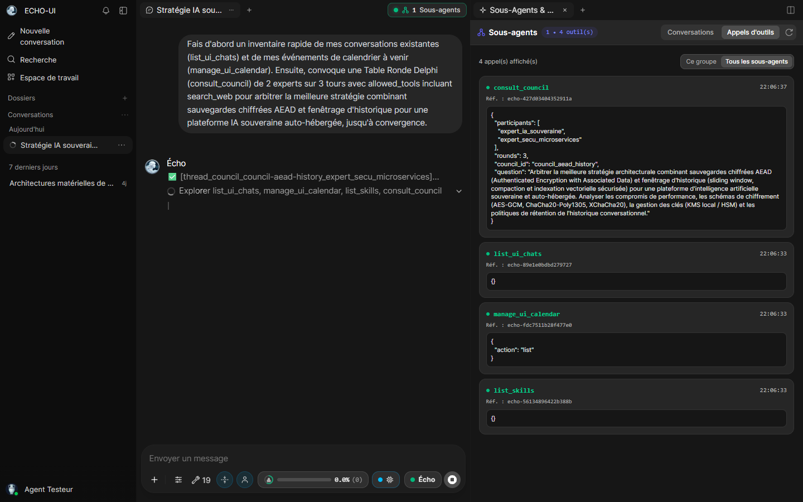
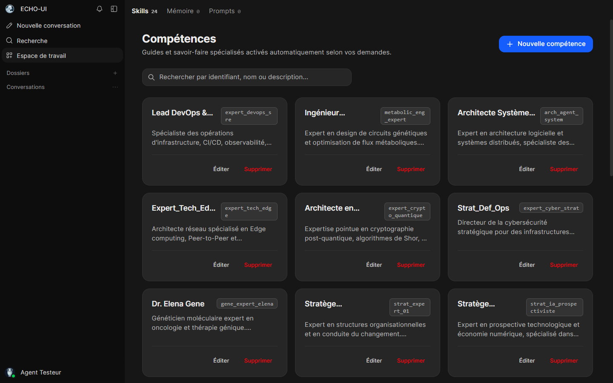
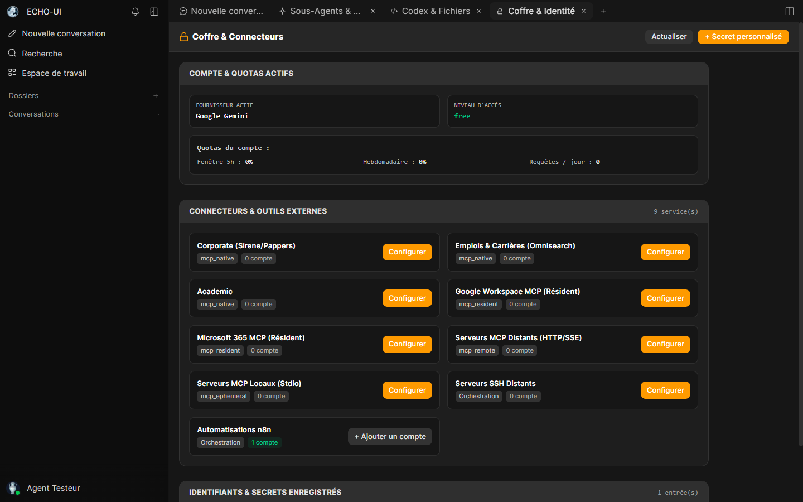

14. Agents & Automatisation
Déléguer, contrôler et connecter vos services externes en toute souveraineté
Pour les travaux longs, les analyses contradictoires ou l'intégration avec vos outils externes (messageries, espaces Cloud, recherche académique ou d'emploi, workflows d'automatisation et serveurs distants), ECHO mobilise des sous-agents spécialisés observables en direct et protège l'ensemble de vos accès dans un coffre chiffré.
1. Sous-Agents, Conseils et Phalanges Multi-Niveaux
Lorsque l'assistant délègue une tâche complexe, vous pouvez suivre chaque étape de son raisonnement et de ses appels d'outils en temps réel dans l'onglet Sous-Agents & Outils du panneau latéral droit.

Onglet Sous-Agents & Outils : délibération d'une Table Ronde Delphi V2 en cours d'exécution (badge Prométhée, 2 membres), suivi par participant, diffusion ciblée et contrôles temps réel.

Vue Appels d'outils : journal horodaté et détaillé des invocations d'outils consolidés (consult_council, list_ui_chats, manage_ui_calendar, list_skills) exécutées durant la session.
| Mode d'orchestration | Fonctionnement | Usage recommandé |
|---|---|---|
| Sous-Agent autonome | Exécuté par tranches supervisées (jusqu'à 4 sous-agents en parallèle), avec arrêt automatique après 3 erreurs d'outils consécutives. | Sous-tâche technique isolée, audit d'un module, recherche ou traitement parallèle sans saturer le fil principal. |
| Table Ronde (Conseil Delphi V2) | De 1 à 7 profils d'expertise (démultipliables de 1 à 5 pour la contradiction interne) dotés d'un périmètre d'outils autorisés débattent sur 3 à 10 tours, avec arrêt anticipé dès convergence unanime et possibilité de reprise multi-séances sur un conseil existant. | Décision d'architecture, analyse stratégique ou question ouverte exigeant plusieurs points de vue contradictoires outillés. |
| Phalange Multi-Niveaux | Un Stratège orchestre des Hoplites et des Capitaines optionnels (jusqu'à 3 niveaux de profondeur), avec coopération latérale, relais de contexte (handoff) et bacs à sable isolés. |
Chantiers complexes multi-fronts, ingénierie critique ou rédaction technique nécessitant une coordination hiérarchique et des relais contrôlés. |
| Collecteur de données | Agent spécialisé combinant recherche Web, consultation des connecteurs et envoi direct de fichiers vers votre Cloud. | Collecte et transfert de gros volumes externes sans encombrer la conversation principale. |
Pilotage interactif depuis l'onglet Sous-Agents & Outils
Vous disposez d'onglets par participant, d'un filtre Ce groupe / Tous, d'une bascule
Live / Pause avec compteur de nouvelles étapes, de boutons Pause,
Reprendre (+N tours), Stop et Fermer, ainsi que d'une zone
de saisie permettant d'adresser directement une consigne à un agent précis (@nom) ou à tout le
groupe (📢 Tous).
2. Compétences métier (Skills)
Les Compétences sont des fiches d'instructions structurées qui spécialisent le comportement des sous-agents (rôle, règles méthodologiques, obligation éventuelle de vérifier des informations récentes sur le Web). Elles sont gérées depuis Espace de travail → Compétences.

Espace de travail Compétences : consultation, édition et création de profils d'expertise pour les sous-agents.
Avant de créer une nouvelle compétence, l'assistant recherche toujours si une compétence adaptée existe déjà dans votre catalogue. Toute suppression demandée via le chat déclenche obligatoirement une modale de confirmation.
3. Workflows d'automatisation (N8N)
ECHO embarque un moteur d'automatisation capable de rechercher des modèles communautaires, de concevoir des workflows multi-étapes (via un architecte délégué dédié dès qu'un graphe dépasse deux nœuds), de les tester ponctuellement puis de les déployer en tâche de fond permanente.
- Test ponctuel vs Démon permanent : tout nouveau workflow doit d'abord être validé par une exécution de test isolée avant d'être activé en continu.
- Protection des secrets : aucun mot de passe ou jeton n'est écrit en dur dans la définition du workflow ; des marqueurs sécurisés sont remplacés dynamiquement à l'exécution depuis votre Coffre.
- Récupération automatique des fichiers : les rapports ou fichiers produits par un workflow sont automatiquement rapatriés et indexés dans votre conversation.
4. Connecteurs externes (MCP) et Coffre & Identité
Grâce au protocole standardisé MCP et à l'onglet Coffre & Identité, l'assistant interagit avec des services externes sans jamais recevoir vos secrets en clair dans son contexte.

Onglet Coffre & Identité : vue des connecteurs configurés et gestion sécurisée des comptes et secrets.
Services intégrés prêts à l'emploi
Données légales d'entreprises (Sirene / Pappers), agrégateur multi-sources d'offres d'emploi (APEC, LinkedIn, France Travail, Welcome to the Jungle) et recherche scientifique (arXiv, Semantic Scholar, CrossRef).
Suites Cloud (Google & Microsoft 365)
Lecture et gestion d'e-mails, agendas, contacts et espaces de stockage (Google Drive, Docs, Sheets, Slides, OneDrive), avec envoi direct de fichiers locaux volumineux sans passage par du texte encodé.
Connecteurs à la demande & SSH
Ajout de serveurs MCP distants, de connecteurs locaux éphémères ou d'alias SSH. Chaque connecteur affiche directement dans l'onglet les instructions détaillées requises pour sa configuration.
Sécurité des identifiants dans le Coffre
Chaque secret enregistré dans Coffre & Identité est chiffré individuellement par utilisateur et par service. Lorsque vous disposez de plusieurs comptes pour un même service (par exemple deux messageries), précisez l'identifiant du compte souhaité : ECHO refuse toute sélection ambiguë par défaut.
Dossier d'Ingénierie : EchoSubagentController (11 Moteurs), Orchestration Delphi/Critique, N8N, MCP Broker & AEAD
1. Contrôleur Unifié des Sous-Agents (echo_subagent_hub.py v6.23.3.1 & agent_engine_tool.py v6.23.0.1)
- Registre SSOT (11 moteurs) :
ECHO_SUBAGENT_ENGINES_REGISTRYdansecho_constants.py(v6.24.0.1) répertoriedelegate,council,council_synthesis,phalanx,navigator,deep_research,n8n_grapher,data_brokeretimage_gen(avecrole_order,has_tool_loop,is_addressable,default_slice_limitetdefault_slice_timeout_sec). - Cadence, Parallélisme & Disjoncteur PARE : Maximum
ECHO_MAX_PARALLEL_SUBAGENTS = 4sous-agents simultanés ; tranches coopératives deECHO_SUBAGENT_CHECKPOINT_TURNS = 8tours d'outils (ECHO_MAX_PARALLEL_TOOLS_PER_TURN = 5par tour) ouECHO_SUBAGENT_CHECKPOINT_TIMEOUT_SEC = 120s; arrêt automatique ensuspended_pare_alertaprèsECHO_SUBAGENT_MAX_CONSECUTIVE_ERRORS = 3erreurs consécutives ; verrouasyncioscopé parsub_sid, file FIFO SQLite (steer) avec balises<REQUETE_ORCHESTRATEUR>/<REQUETE_UTILISATEUR>, et scellement synthétique HTTP 400-safe surkill. - Outils & Interface :
delegate_to_agent, outil polymorphe unifiécontrol_subagents(status,collect,steer,resumeparallèle,suspend,kill,summarize,close,purge_now), etask_data_broker(delegate_to_data_broker.pyv6.23.0.1). Côté UI :EchoCognitionTab.svelteet routeur lecture/pilotagerouters/cognition.py(v6.21.9.1, temps réel poussé parecho_cognition_updatesur/echo/v1/wm/ws).
2. Conseil Delphi V2, Phalanges Multi-Niveaux & Skills (agent_orchestration_tool.py v6.23.1.1 & echo_skills.py v5.231.20.1)
consult_council(Delphi V2) : Jusqu'àCOUNCIL_MAX_SKILLS = 7profils démultipliés parmultiplier∈[1..5](préfixage anti-collisionm{idx}_{sid}) surrounds∈[3..10]bornés par l'invariant arithmétique(len(participants) * multiplier) * rounds <= COUNCIL_MAX_PR_COMPLEXITY (60). Supporteallowed_tools, cache KV chaud sursystemInstruction, historique complet, arrêt anticipé par unanimité stricte sur[POSITION_STABILISEE]et continuité multi-séances viacouncil_state:<cid>. Budget par tour Delphi :COUNCIL_EXPERT_MAX_TOOL_TURNS_PER_ROUND = 3(plage0..6) /120s, suivi d'une synthèseEchoSubagentController.run_cognitive_step(MODEL_PROMETHEUS,override_thinking="high").consult_phalanx: Déploie une Phalange hiérarchique (Stratège → Capitaine optionnel → Hoplite, bornée parECHO_MAX_PHALANX_DEPTH = 3) surEchoSubagentController.run_or_resume(ECHO_AUTONOMOUS_MAX_TURNS = 15tours /300s) avec délégationcan_delegate, coopération latérale (status,collect,steer), relaishandoff(HandoffSpecà 3 champs, plafond 4 relais) et isolation paresseusesandbox/<sub_sid>/.- Gestion des Compétences :
forge_skill,list_skills,read_skill,search_skill(MODEL_APOLLO),delete_user_skill(bloqué en headless). Stockage protégé parget_user_skill_locket_resolve_safe_skill_dir, servi parrouters/skills.py(v6.6.9.1) etEchoSkills.svelte.
3. Orchestration N8N (n8n_orchestrator_tool.py v6.24.2.1 & 26-docker-n8n-worker)
- 5 outils :
manage_n8n_template(create,update,delete),manage_n8n_workflow(prepare,update,stop,delete,run_oneshot,deploy_daemon),n8n_hub(search,download),query_n8n_documentation,delegate_to_n8n_grapher(MODEL_PROMETHEUS, tranches8 tours / 120s). - Sandbox Oneshot vs Démon (
n8n_api.pyv6.24.2.1) : Base SQLite n8n dédiée (volumeecho-n8n-data). Oneshot isolé exigeantExecute Workflow Triggeret plafonné à 8 Ko (8192octets) de sortie synchrone ; arrêt non-destructif viaPOST /stop; Démon déployé en 2 étapes sous préfixe[ECHO:<user_id>]; injection dynamique des macros__ECHO_SECRET_<KEY>__avec masquage dans les journaux (_redact_injected_secrets) et écriture disque contrainte à__ECHO_DOWNLOAD_DIR__/.
4. MCP Broker & Identity Vault (echo_mcp_tool.py v6.11.0.1, 23-docker-mcp-broker & echo_crypto.py v6.22.1.1)
- Proxy & Providers (
server.pyv6.11.0.1,m5_providers.pyv6.11.0.1,m5_proxy_mcp.pyv6.7.18.1) : Exposition StreamableHTTP/REST sans accès BDD ; propagation par en-têtes ASGIx-openwebui-user-id,x-openwebui-chat-id,x-echo-credentials. Cache de sessions_SessionHolderindexé sur(user_id, service, cred_hash[:12])(start60s, call55s, close15s). - Catalogue des 9 Services (
SERVICE_SCHEMAS+n8n_workflows) :mcp_native(corporate,jobs_omnisearch,academic),mcp_resident(google_workspace,microsoft_365),mcp_remote(remote_mcp),mcp_ephemeral(stdio_mcpvianpx/uvxsous Node.js 22.x LTS) etorchestration(ssh,n8n_workflows). Transfert Cloudupload_file_to_driveen streaming résumable par tranches PPCM de 5 MiB (jusqu'à 4 Go). Routage automatique des fichiers téléchargés vers25-docker-download-broker. - Chiffrement AEAD du Coffre (
identity_vault_tool.pyv6.20.3.1 &routers/vault.pyv6.21.9.1) : Chiffrement applicatif au niveau champ AES-256-GCM (enc:v1:<nonce_b64>:<ciphertext_b64>:<tag_b64>) dansidentity.db::identity_vault, clé par utilisateur dérivée via HKDF-SHA256 (salt=user_id,info=b"echo-identity-vault") depuisECHO_VAULT_ENCRYPTION_KEY, authentification contextuelle liéeAAD = f"{user_id}:{service}:{account_id}"(politique Fail-Closed), et masquage strict des secrets danslist_identitiesetEchoVaultTab.svelte.